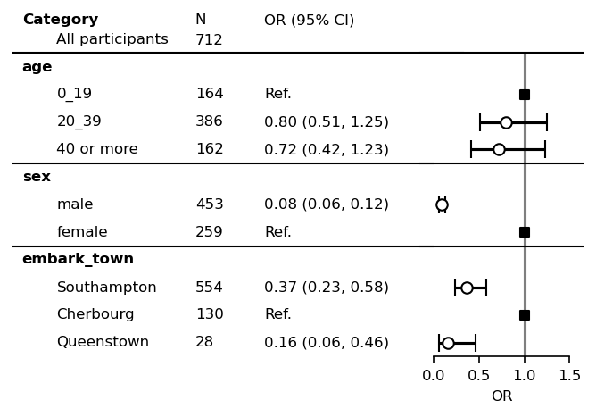

BaseForestplot¶
[1]:
import pandas as pd
import numpy as np
import matplotlib.pyplot as plt
%matplotlib inline
import statsmodels.api as sm
import statsmodels.formula.api as smf
import myforestplot as mfp
%load_ext autoreload
%autoreload 2
%load_ext watermark
%watermark -n -u -v -iv -w -p graphviz
Last updated: Fri Sep 09 2022
Python implementation: CPython
Python version : 3.9.7
IPython version : 8.0.1
graphviz: not installed
matplotlib : 3.5.3
statsmodels : 0.13.2
pandas : 1.4.1
numpy : 1.21.5
myforestplot: 0.1.7
Watermark: 2.3.1
Label names, ORs, left side spines, and ylabel ticks¶
[2]:
# Sample data preparation
data = (pd.read_csv("titanic.csv")
[["survived", "pclass", "sex", "age", "embark_town"]]
.dropna()
)
ser = data["age"]
data["age"] = (ser
.mask(ser >= 40, "40 or more")
.mask(ser < 40, "20_39")
.mask(ser <20, "0_19")
)
# Fit logistic regression
res = smf.logit("survived ~ sex + age + embark_town", data=data).fit()
order = ["age", "sex", "embark_town"]
cont_cols = []
item_order = {"embark_town": ['Southampton', 'Cherbourg', 'Queenstown'],
"age": ["0_19", "20_39", "40 or more"]
}
df_res = mfp.statsmodels_pretty_result_dataframe(data, res,
order=order,
cont_cols=cont_cols,
item_order=item_order,
fml=".3f",
)
df = df_res.copy()
Optimization terminated successfully.
Current function value: 0.509862
Iterations 6
[3]:
df
[3]:
| category | item | 0 | 1 | risk | nobs | risk_pretty | |
|---|---|---|---|---|---|---|---|
| 5 | age | 0_19 | NaN | NaN | NaN | 164 | Ref. |
| 1 | age | 20_39 | 0.509199 | 1.251529 | 0.798296 | 386 | 0.80 (0.51, 1.25) |
| 2 | age | 40 or more | 0.415780 | 1.230498 | 0.715274 | 162 | 0.72 (0.42, 1.23) |
| 0 | sex | male | 0.057797 | 0.122138 | 0.084019 | 453 | 0.08 (0.06, 0.12) |
| 6 | sex | female | NaN | NaN | NaN | 259 | Ref. |
| 4 | embark_town | Southampton | 0.229981 | 0.582518 | 0.366016 | 554 | 0.37 (0.23, 0.58) |
| 7 | embark_town | Cherbourg | NaN | NaN | NaN | 130 | Ref. |
| 3 | embark_town | Queenstown | 0.055646 | 0.457460 | 0.159549 | 28 | 0.16 (0.06, 0.46) |
[4]:
plt.rcParams["font.size"] = 8
fp = mfp.BaseForestPlot(ratio=(5,3),
figsize=(7,3),
dpi=150,
df=df,
hide_spines=["top", "right"],
yticks_show=True)
fp.errorbar()
fp.ax2.set_xlim([0, 1.5])
fp.ax2.set_xticks([0, 0.5, 1, 1.5])
fp.ax2.set_xlabel("OR")
fp.ax2.axvline(x=1, ymin=0, ymax=1.0, color="black", alpha=0.5)
fp.ax1.set_xlim([0.3, 1])
fp.embed_strings("category", 0.3, header="Category",
duplicate_hide=True,
text_kwds=dict(fontweight="bold"),
header_kwds=dict(fontweight="bold")
)
fp.embed_strings("item", 0.53, header="", replace={"age":""})
fp.embed_strings("risk_pretty", 0.72, header="OR (95% CI)")
fp.horizontal_variable_separators()

Change styles of errorbars and horizontal lines¶
[5]:
plt.rcParams["font.size"] = 8
errorbar_kwds = dict(fmt="o",
capsize=0,
lw=1,
markeredgecolor="black",
ecolor="red",
color='red'
)
ref_kwds = dict(marker="D", s=26, color="blue")
fp = mfp.BaseForestPlot(ratio=(5,3),
figsize=(7,3),
dpi=150,
df=df,
)
fp.errorbar(errorbar_kwds=errorbar_kwds, ref_kwds=ref_kwds)
fp.ax2.set_xlim([0, 1.5])
fp.ax2.set_xticks([0, 0.5, 1, 1.5])
fp.ax2.set_xlabel("OR")
fp.ax2.axvline(x=1, ymin=0, ymax=1.0,
color="black", alpha=0.5, ls="--", lw=0.8)
fp.ax1.set_xlim([0.3, 1])
fp.embed_strings("category", 0.33, header="Category",
duplicate_hide=True,
text_kwds=dict(fontweight="bold"),
header_kwds=dict(fontweight="bold")
)
fp.embed_strings("item", 0.56, header="", replace={"age":""})
fp.embed_strings("risk_pretty", 0.75, header="OR (95% CI)")
fp.horizontal_variable_separators()
Log scale with vertical align of categories¶
Values are converted with np.log so that ticks should be edited by similarly np.log.
[6]:
plt.rcParams["font.size"] = 8
fp = mfp.BaseForestPlot(ratio=(8,3), dpi=150, figsize=(5,3), df=df,
vertical_align=True)
fp.errorbar(errorbar_kwds=None, log_scale=True)
xticklabels = [0.1, 0.5, 1.0, 2.0]
fp.ax2.set_xlim(np.log([0.05, 1.5]))
fp.ax2.set_xticks(np.log(xticklabels))
fp.ax2.set_xticklabels(xticklabels)
fp.ax2.set_xlabel("OR (log scale)")
fp.ax2.axvline(x=0, ymin=0, ymax=1.0, color="black", alpha=0.5)
fp.ax1.set_xlim([0.3, 1])
fp.embed_cate_strings("category", 0.3, header="Category",
text_kwds=dict(fontweight="bold"),
header_kwds=dict(fontweight="bold")
)
fp.embed_strings("item", 0.36, header="", replace={"age":""})
fp.embed_strings("nobs", 0.60, header="N")
fp.embed_strings("risk_pretty", 0.72, header="OR (95% CI)")
fp.horizontal_variable_separators()
plt.show()
Multiple confidence bands¶
[7]:
# Sample data preparation
data = (pd.read_csv("titanic.csv")
[["survived", "pclass", "sex", "age", "embark_town", "class"]]
.dropna()
)
ser = data["age"]
data["age"] = (ser
.mask(ser >= 40, "40 or more")
.mask(ser < 40, "20_39")
.mask(ser <20, "0_19")
)
# Fit logistic regression
data1 = data[data["class"] == "First"]
data2 = data[data["class"] == "Second"]
data3 = data[data["class"] == "Third"]
res1 = smf.logit("survived ~ sex + age + embark_town", data=data1).fit()
res2 = smf.logit("survived ~ sex + age + embark_town", data=data2).fit()
res3 = smf.logit("survived ~ sex + age + embark_town", data=data3).fit()
order = ["age", "sex", "embark_town"]
cont_cols = []
item_order = {"embark_town": ['Southampton', 'Cherbourg', 'Queenstown'],
"age": ["0_19", "20_39", "40 or more"]
}
df1 = mfp.statsmodels_pretty_result_dataframe(data1, res1,
order=order,
cont_cols=cont_cols,
item_order=item_order,
fml=".3f",
)
df2 = mfp.statsmodels_pretty_result_dataframe(data2, res2,
order=order,
cont_cols=cont_cols,
item_order=item_order,
fml=".3f",
)
df3 = mfp.statsmodels_pretty_result_dataframe(data3, res3,
order=order,
cont_cols=cont_cols,
item_order=item_order,
fml=".3f",
)
Optimization terminated successfully.
Current function value: 0.421597
Iterations 7
Optimization terminated successfully.
Current function value: 0.295225
Iterations 7
Optimization terminated successfully.
Current function value: 0.476894
Iterations 7
[8]:
plt.rcParams["font.size"] = 8
errorbar_kwds = dict(fmt="o",
capsize=2,
lw=1,
markersize=4,
markeredgecolor="black",
)
ref_kwds = dict(marker="s", s=13)
fp = mfp.BaseForestPlot(ratio=(5,3),
figsize=(7,4),
dpi=150,
df=df1,
)
fp.errorbar(errorbar_kwds=errorbar_kwds,
ref_kwds=ref_kwds,
y_adj=0.3,
errorbar_color="blue",
ref_color="blue",
label="First",
)
fp.errorbar(errorbar_kwds=errorbar_kwds,
ref_kwds=ref_kwds,
df=df2,
y_adj=0,
errorbar_color="red",
ref_color="red",
label="Second",
)
fp.errorbar(errorbar_kwds=errorbar_kwds,
ref_kwds=ref_kwds,
df=df3,
y_adj=-0.3,
errorbar_color="green",
ref_color="green",
label="Third",
)
plt.legend(bbox_to_anchor=(-0.0,1.105),
loc="upper left",
ncol=3,
markerscale=0.8,
frameon=False,
handletextpad=.1,
columnspacing=.2)
fp.ax2.set_xlim([0.0, 1.5])
fp.ax2.set_xticks([0, 0.5, 1, 1.5])
fp.ax2.set_xlabel("OR")
fp.ax2.axvline(x=1, ymin=0, ymax=1.0,
color="black", alpha=0.5, ls="--", lw=0.8)
fp.ax1.set_xlim([0.3, 1])
fp.embed_strings("category", 0.33, header="Category",
duplicate_hide=True,
text_kwds=dict(fontweight="bold"),
header_kwds=dict(fontweight="bold")
)
fp.embed_strings("item", 0.56, header="", replace={"age":""})
fontsize = 7
x = 0.75
fp.embed_strings("risk_pretty", x, header="OR (95% CI)",
fontsize=fontsize,
df=df1, y_adj=0.3, replace={"Ref.":""})
fp.embed_strings("risk_pretty", x, header="OR (95% CI)",
fontsize=fontsize,
df=df2, y_adj=0.0, replace={})
fp.embed_strings("risk_pretty", x, header="OR (95% CI)",
fontsize=fontsize,
df=df3, y_adj=-0.3, replace={"Ref.":""})
fp.horizontal_variable_separators()
For adjustment of legends spacing, see this thread.
[ ]: